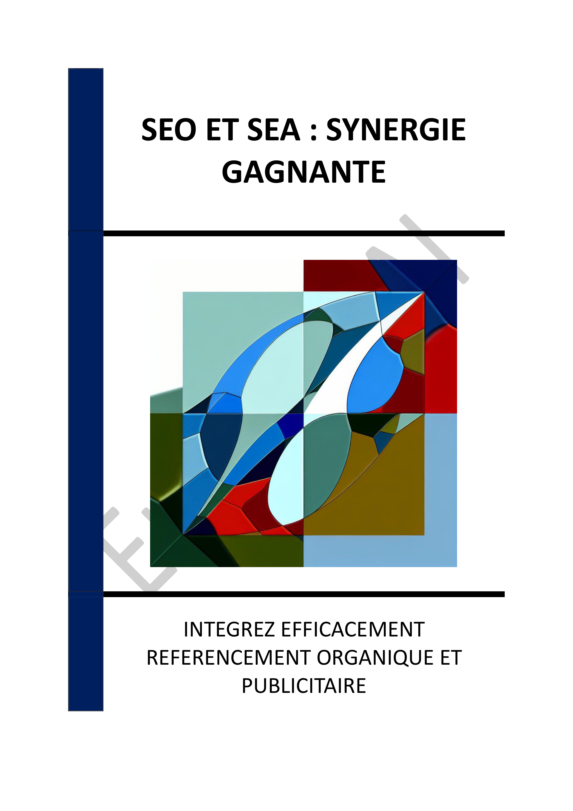

▶
Vitesse
++
+
=
-
--
INTRODUCTION - L'OPTIMISATION DE LA VISIBILITÉ EN LIGNE : UNE APPROCHE INTÉGRÉE
Chapitre 1 - INTRODUCTION À LA SYNERGIE ENTRE SEO ET SEA
1.1 - Définition et importance de la synergie
1.2 - Les bénéfices d'une stratégie intégrée
1.3 - Les défis de l'intégration
Chapitre 2 - LES FONDEMENTS DU SEO EN 2025
2.1 - Optimisation technique des sites web
2.2 - Création de contenu de qualité
2.3 - Stratégies de netlinking
Chapitre 3 - STRATÉGIES AVANCÉES DE SEA
3.1 - Ciblage et segmentation
3.2 - Optimisation des enchères
3.3 - Analyse des performances
Chapitre 4 - L'IMPORTANCE DE L'EXPÉRIENCE UTILISATEUR
4.1 - Navigation et accessibilité
4.2 - Temps de chargement des pages
4.3 - Contenu pertinent et engageant
Chapitre 5 - ÉVOLUTION DES FORMATS DE CONTENU ET LEUR IMPACT SUR LE SEO
5.1 - Recherche vocale et visuelle
5.2 - Intégration des vidéos et infographies
5.3 - Formats interactifs et immersifs
Chapitre 6 - RÔLE DE L'IA DANS LE SEO ET LE SEA
6.1 - Automatisation des campagnes
6.2 - Personnalisation des expériences
6.3 - Analyse prédictive
Chapitre 7 - OUTILS D'ANALYSE ET DE GESTION DES CAMPAGNES
7.1 - Outils de suivi des performances
7.2 - Gestion des mots-clés
7.3 - Optimisation des budgets
Chapitre 8 - ÉTUDES DE CAS : SUCCESS STORIES DE SYNERGIE SEO/SEA
8.1 - Cas d'une entreprise e-commerce
8.2 - Cas d'une PME locale
8.3 - Cas d'une startup technologique
CONCLUSION - VERS UNE STRATÉGIE DE RÉFÉRENCEMENT INTÉGRÉE ET DURABLE
📄 Consulter les annexes du livre
Mentions légales